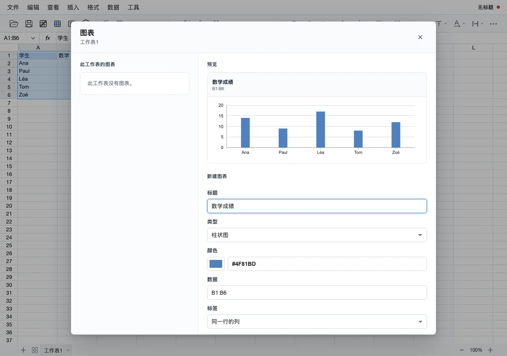
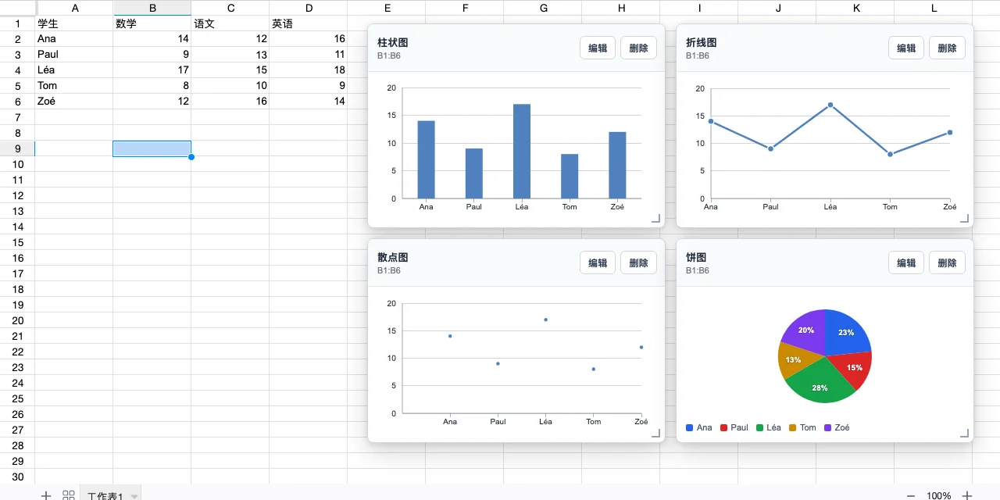
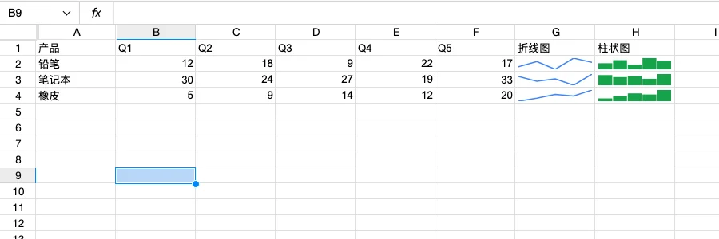

图表与迷你图
创建图表
- 选择数据。
- 或 插入 › 插入图表。
- 选择类型和选项；预览随之变化。
- 添加，然后 关闭。

| 选区 | 解释为 |
|---|---|
| 一列或一行数字 | 数据 |
| 两列 | 第一列为标签，第二列为数据 |
| 两行 | 第一行为标签，第二行为数据 |
| 用 Ctrl 选择的两个分开的列 | 同上 |
一个图表显示一个系列：一行或一列数据。没有数字的单元格（如标题）会被忽略。
类型
| 类型 | 用于 | 标签 |
|---|---|---|
| 柱状图 | 比较 | 在柱形下方 |
| 折线图 | 变化趋势 | 在横轴上 |
| 散点图 | 两个量的关系 | 若为数字，则是横坐标；否则为 1、2、3… |
| 饼图 | 占比；正值 | 在图例或扇区上 |
最多 120 个值，饼图 24 个。

选项
| 字段 | 内容 |
|---|---|
| 标题 | 必填；显示在图表顶部 |
| 颜色 | 取色器或代码 #4F81BD；扇区有各自的颜色 |
| 数据 | 区域：B2:B6 |
| 标签 | 无；同一行的列（A）；同一列范围的行（1）；自定义区域，与数据大小相同 |
| 显示 | 数值、图例、横轴、纵轴、网格 |
移动、修改
- 拖动标题条可移动图表；拖动右下角可调整大小。
- 编辑 重新打开窗口，删除 删除图表。窗口中还列出工作表的所有图表。
- 图表随其单元格的数据变化。
图表以真正的图表保存在 Excel 文件中，DocCells 可再次读取。它们不会随工作表打印。
迷你图
SPARKLINE 函数在单元格中绘制微型图表。
=SPARKLINE(B2:F2)
=SPARKLINE(B2:F2, {"charttype"\"column"})
=SPARKLINE(B2:F2, {"charttype"\"line", "color"\"#dc2626", "linewidth"\2})
=SPARKLINE(B2:F2, {"charttype"\"bar", "max"\100})
选项写在花括号中：名称、反斜杠、值；选项之间用逗号分隔。
charttype | 图形 | 专用选项 |
|---|---|---|
"line"（默认） | 折线 | color、linewidth、xmin、xmax、ymin、ymax |
"bar" | 堆积条形 | max、color1、color2 |
"column" | 柱形 | color、negcolor、lowcolor、highcolor、firstcolor、lastcolor、axis、axiscolor、ymin、ymax |
"winloss" | 盈亏 | 同上，但没有 ymin 和 ymax |
通用选项：empty（"zero" 或 "ignore"）、nan（"convert" 或 "ignore"）、rtl（从右到左）。SPARKLINE 文档给出所有取值及示例。
要画得更大，请加大行高和列宽，或合并单元格。